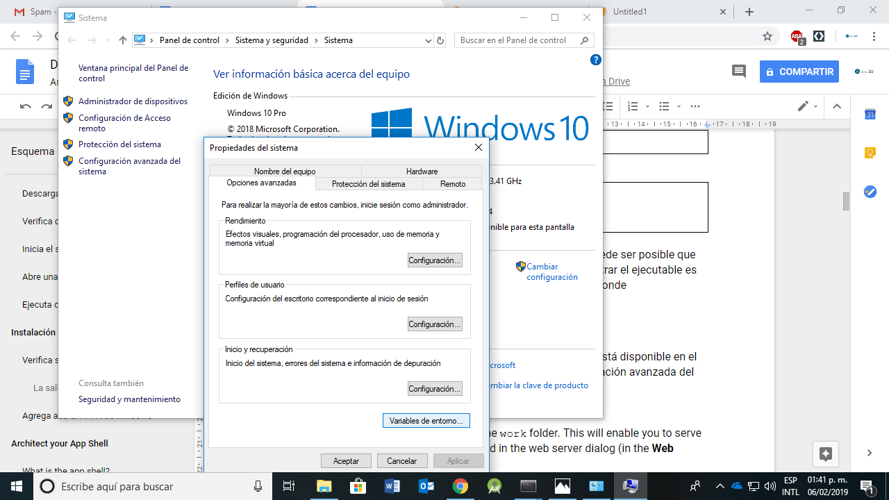
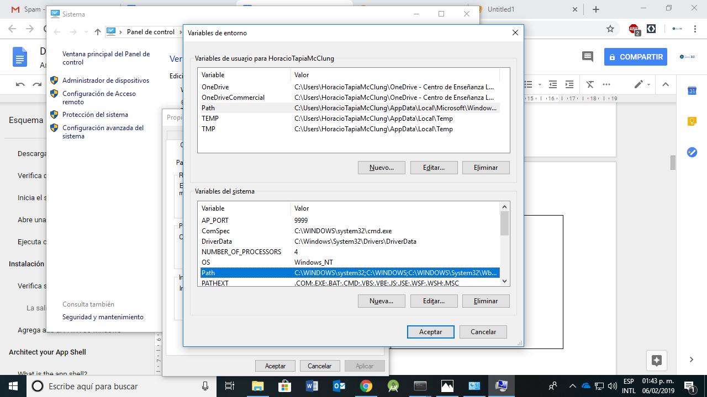
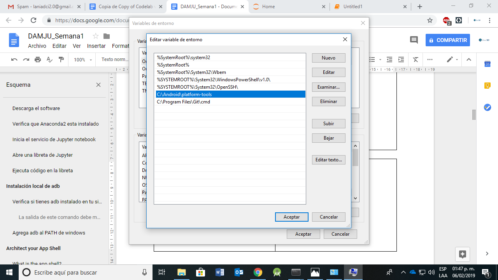
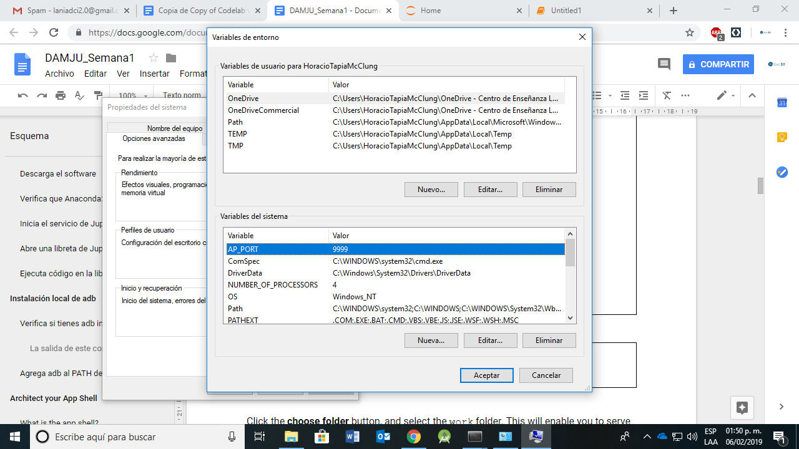

- Conocer algunas de las funcionalidades de Jupyter Notebooks
- Obtener archivos de internet de manera programática
- Guardar archivos localmente de forma
Qué haremos
En este laboratorio vamos a usar el ambiente de Jupyter que instalaron previamente para configurar el uso del módulo |
|

What you'll learn
- Cómo usar libretas de Jupyter para ejecutar código de Python
- Como obtener archivos de internet usando Jupyter
- Como modificar archivos en Jupyter y guardarlos localmente
- Como acceder al sistema operativo local desde una libreta de Jupyter
Que vamos a necesitar
- Una computadora personal con la aplicación Jupyter Notebooks instalada
- Conexión a internet
Actividades/Libretas
Este semana se compone de una serie de tutoriales que deben seguir para poder configurar el sistema de trabajo. En cada tutorial hay un video corto que muestra los pasos principales y al final una libreta de codigo que deben ejecutar en su sistema para establecer la conexion entre su computadora y el dispositivo móvil.
Las actividades de esta semana son:
- Instalación local de Jupyter vía Anaconda
- Instalación/configuración local de
adb - Instalación de Python en el dispositivo móvil
- Instalación y configuración local del módulo
androidhelper.py - Comunicación entre el dispositivo móvil y el sistema local
- Configuración del ecosistema de Jupyter en la nube
El módulo android.py es necesario para poder invocar objetos en Python que puedan acceder a la API de Android. A continuación están los enlaces donde podrás descargar los programas, sin embargo, haremos la configuración vía las libretas de Jupyter con el fin de familiarizarnos con el sistema y tener una evidencia de evaluación de los avances de la semana.
Presiona el siguiente botón para acceder a la libreta de Jupyter que contiene las instrucciones para instalar el módulo en tu sistema.
Enlaces al módulo android.py para descarga local
En caso de tener problemas para ejecutar las instrucciones anteriores, abajo encontraran los enlaces para descargar los modulos.
Descarga el módulo android.py
Descarga el módulo androidhelper.py
adb es el programa proporcionado por los desarrolladores de Android para detectar dispositivo móvil en el sistema local. Puede obtenerse en este enlace. La documentación de adb puede consultarse aqui.
Verifica si tienes adb instalado en tu sistema
Para verificar si tienes instalado el programa, abre otra ventana de Anaconda Prompt o terminal y en la línea de comando escribe lo siguiente:
adb --versionDebes ver como salida de este comando algo parecido a lo siguiente, que indica la versión del ejecutable y la ruta de instalación.
Android Debug Bridge version 1.0.40
Version 4986621
Installed as C:\Android\platform-tools\adb.exeSi el comando anterior no regresa la información del programa, puede ser posible que no lo tengas en la ruta de acceso del sistema. La clave para encontrar el ejecutable es localizar los directorios Android y platform-tools pues es ahí donde tradicionalmente se localiza el ejecutable.
Agrega adb al PATH de windows
Una vez que hayas localizado el ejecutable, asegurate que la ruta está disponible en las variables de entorno del sistema operativo. Si estas en Windows, abre la configuración avanzada del sistema -> propiedades del sistema y en la pestaña de opciones avanzadas selecciones variables de entorno |  |
|   |
|  |
Vuelve a escribir en la consola el comando adb --version, esta vez debería funcionar si no lo ha hecho ya.
En este punto, debes tener configurado tu sistema local con el ecosistema de Jupyter y Python disponibles y el programa adb accesible por el sistema operativo. A continuación vamos a configurar el dispositivo móvil.
Para poder ejecutar comandos de Python en Android usaremos una tecnología que permite acceder a la mayoría de las funcionalidades de Android a través de fachadas.
Los pasos siguientes tienen que realizarse en el dispositivo móvil. La instalación es muy sencilla y automática.
Descarga el software de SL4A
Captura la siguiente imagen con la cámara de tu dispositivo para descargar el Scripting Layer For Android
Instala sl4a
Para instalar el software debes tener habilitada la opción de permitir instalación de software externo bajo la configuración de opciones de desarrollador del dispositivo.
Ejecuta el programa que descargaste y sigue las instrucciones en la pantalla del dispositivo.
Descarga el software de Python
Captura la siguiente imagen con la cámara de tu dispositivo para descargar Python for Android

Instala python
Para instalar el software debes tener habilitada la opción de permitir instalación de software externo bajo la configuración de opciones de desarrollador del dispositivo.
Ejecuta el programa que descargaste y sigue las instrucciones en la pantalla del dispositivo. El programa descarga archivos adicionales y completa la instalación.
Inicia el servicio de Python en el dispositivo móvil
Abre la aplicacion SL4A identificada por el icono
en la pantalla de tu dispositivo. Del menú navega a Preferences->Server Port y escribe 2222 en la caja correspondiente.
Después regresa al menú y navega a View->Interpreters, nuevamente menú y elige Start Server. El servicio Público permite comunicarse con el dispositivo vía WiFi. Elige iniciar un servicio Privado y conecta tu dispositivo a un puerto USB de tu computadora.
Vamos a revisar que localmente podemos identificar el dispositivo y que podemos comunicarnos con él a través del servicio de Python. Con el dispositivo conectado a un puerto USB de tu computadora, escribe lo siguiente en la ventana de comando:
>adb devicesEl resultado de dicha instrucción debe dar información sobre el dispositivo conectado a la computadora, por ejemplo
List of devices attached
98f2eeee deviceSi el comando no regresa información revisa la conexión del dispositivo al puerto USB y asegurate que está autorizado por el sistema para comunicarse con la computadora. Después escribe